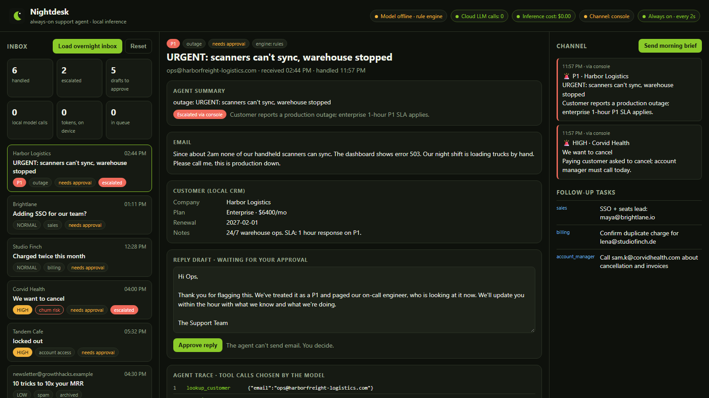
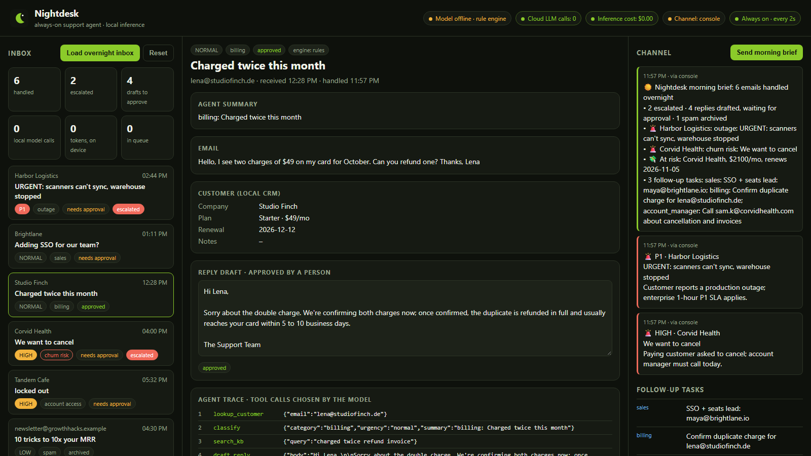

The support agent that works the night shift, on your own hardware. It triages every email overnight, drafts grounded replies for approval, pages Telegram or Slack only when it matters, and posts a morning brief. No cloud LLM, ever.

The production outage sits under newsletters until someone logs in at 9.
Enterprise contracts promise P1 responses within the hour, at any hour.
“We want to cancel” looks like any other email until the account manager reads it.
Many companies can’t send customer email to a third-party model.
| Agent decision | Action | |
|---|---|---|
| Harbor Logistics: warehouse scanners down, error 503 | Outage · P1 | Paged on-call, holding reply drafted from the outage policy |
| Corvid Health: “we want to cancel” | Churn risk | Paged, account-manager task, careful apology |
| Studio Finch: charged twice | Billing | Refund wording from policy, billing confirms first |
| Brightlane: SSO + 12 seats | Sales | Answer from plans article, sales lead |
| Tandem Cafe: locked out | Account access | Self-serve unlock steps |
| “10x your MRR” newsletter | Spam | Archived. No reply, no alert |
The model URL must be localhost or the call is refused before it is made. Unit-tested.
There is no send-email tool. A person approves every reply.
Paging is allowed only after a P1 or churn-risk classification.
Model down or out of memory? A rule engine runs the same tools.

git clone https://github.com/ParasAdlakha/nightdesk.git && cd nightdesk cp .env.example .env.local ollama pull qwen2.5:3b # on a Dell Pro Max GB10: qwen2.5:32b or Nemotron Nano 9B npm test && npm start # http://localhost:8791